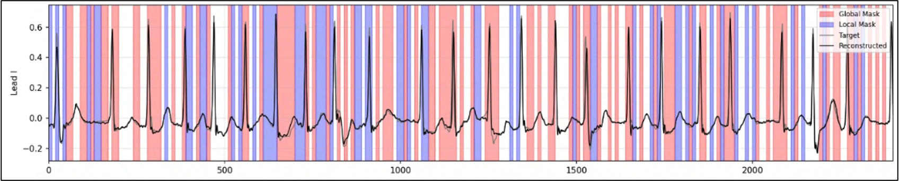

A smartwatch ECG captures far more than heart rhythm — with the right model, it can hint at conditions that normally require a blood draw. This project built the pipeline to screen for 10 major clinical conditions (diabetes, chronic kidney disease, sepsis, and more) directly from wearable ECG signals.
The pipeline covers the full lifecycle: signal pretraining, fine-tuning, and internal/external cohort validation. Most conditions reached AUROC, Sensitivity, and Specificity above 0.80 — strong enough that IRB documentation was drafted and submitted, and a clinical paper is in progress with internal-medicine physicians.
Screen recordings from the actual training runs. Internal identifiers (server IP, dataset codename) are redacted with black boxes.
Masked-reconstruction pretraining on raw ECG, distributed across 4 GPUs with DDP.

Reconstructed (black) vs. target (gray) Lead I signal — the model recovers waveform shape across both globally and locally masked spans
The pretrained encoder fine-tuned per condition, tracked in MLflow.
Running inference across checkpoints and logging AUROC/sensitivity/specificity per condition back to MLflow.